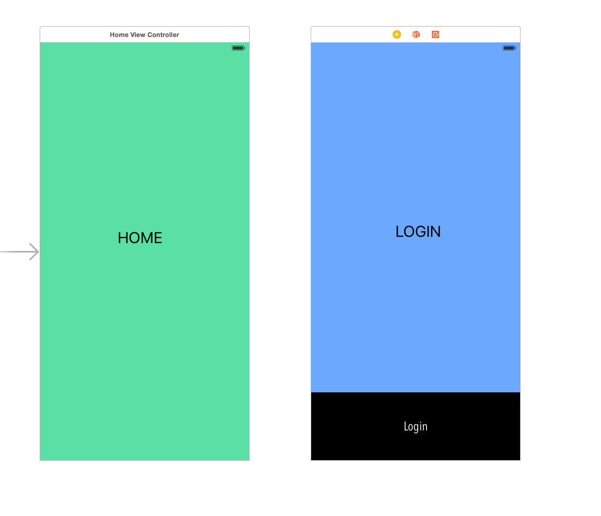
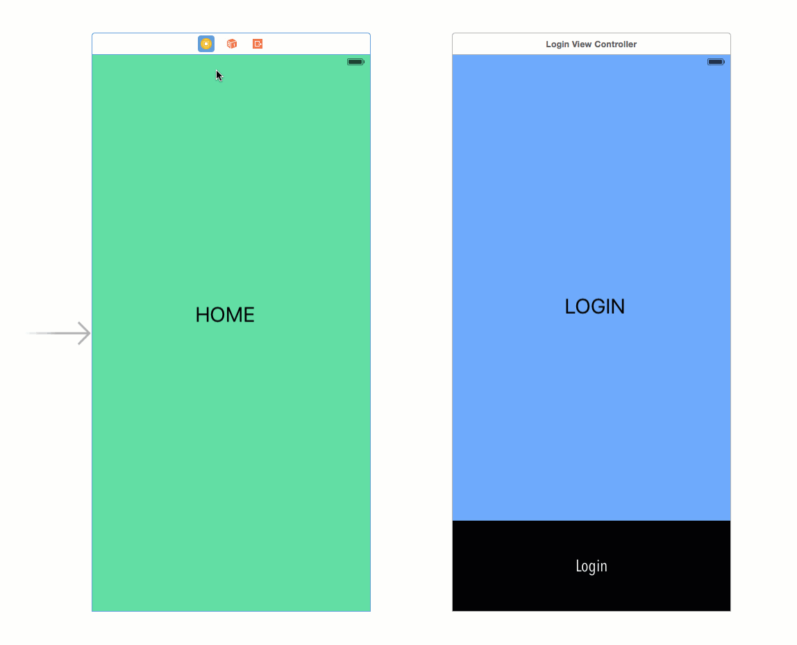
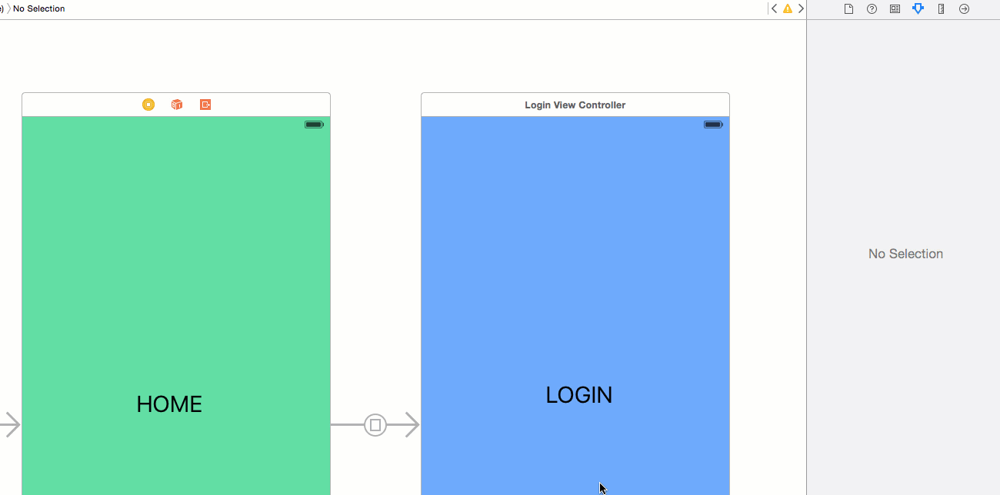

A very common requirement of mobile apps that use the Salesforce Mobile SDK is to check whether a user is logged in before displaying a screen. Thankfully it is a very easy task that requires only a few lines of code, and some understanding of Segues. This tutorial assumes that you already have your app setup with the Mobile SDK. If you haven't done this already, go check out this tutorial.
Add the following code to your viewDidAppear function.
if !SFAuthenticationManager.sharedManager().haveValidSession {
self.performSegueWithIdentifier("login", sender: self)
}
We are using the Mobile SDK's authentication manager to confirm whether the user has a valid session. If they do not, we want to send them to a view that prompts the user to login. This is the same view/button from the Add the Salesforce Mobile SDKto an existing iOS projecttutorial.
That is all we have to do in our controllers. Next, we will set up our storyboard.
For our sample, we will have 2 ViewControllers. I've labeled them Home and Login. Home is the initial view controller in my project, and have the additional logic to check for a valid session in the ViewControllers viewWillAppear function that we just covered.
From the Home View Controller, right click the controller icon and drag to the Login ViewController. When you release the mouse button, select "Present Modally". We are going to present the login screen modally because it is typical behavior to add show a login view above the current view, and we dont need to add the login view to our navigation tree (once we are logged in, we are going to pop the login view controller from the stack to save memory)
The last thing that you need to you is configure your newly created segue with the identifier "login". This is the label that we configured in performSegueWithIdentifier code. It tells iOS which segue to follow. In our case, we only have one segue, but as you build our your app, adding identifiers to your segues helps with maintenance.
That's it. We now have a very easy way to protect our views in iOS apps. Running your app in the simulator will automatically transition to the login view. After a succesful login, simply dismiss the loginView from the SFAuthenticationManager's delegate method
func authManagerDidFinish(manager: SFAuthenticationManager!, info: SFOAuthInfo!) {
if SFAuthenticationManager.sharedManager().haveValidSession {
self.dismissViewControllerAnimated(true, completion: {})
}
}